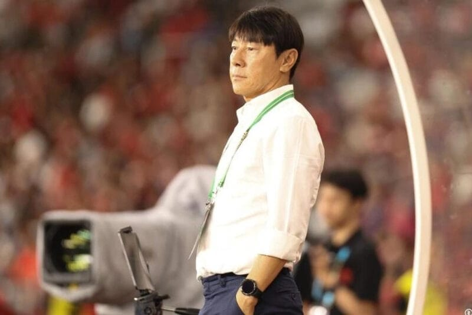
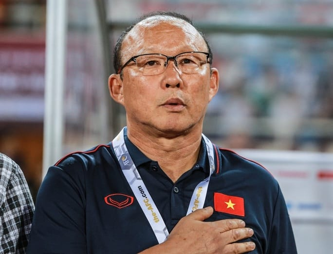

HLV ĐT Indonesia sắp mất ghế, HLV Park Hang-seo được tiến cử thay thế
Truyền thông Indonesia cho rằng HLV Park Hang-seo là một trong những ứng viên thay thế HLV Shin Tae-yong
ngồi vào chiếc ghế thuyền trưởng ĐT Indonesia.
Tương lai của HLV Shin Tae-yong tại ĐT Indonesia là chủ đề nhận được nhiều sự quan tâm trong thời gian gần
đây. Chiếc ghế HLV trưởng của ông Shin đang lung lay dữ dội sau khởi đầu không thành công tại vòng loại hai
World Cup 2026 khu vực Châu Á. Đội tuyển với biệt danh "Chim ưng Garuda" đã thảm bại trước Iraq trong ngày
ra quân với tỉ số 1-5. Ở lượt trận thứ hai, họ lại bị đối thủ yếu nhất bảng Philippines cầm hòa với tỉ số
1-1.
Trước khi vòng loại hai khởi tranh, HLV Shin Tae-yong đã tự tin tuyên bố rằng ĐT Indonesia có đến 80% cơ hội
giành tấm vé đi tiếp. Tuy nhiên sau những kết quả thất vọng ở 2 lượt trận đầu tiên, ông Shin đang đối mặt
với nguy cơ mất việc.

HLV Shin Tae-yong có nguy cơ bị Indonesia sa thải sau khởi đầu không tốt tại vòng loại hai World Cup 2026.
Truyền thông Indonesia cũng nhanh chóng đưa ra danh sách những ứng viên có thể thay thế nhà cầm quân người
Hàn Quốc. Tờ Indo News (Indonesia) đã liệt kê một số ứng viên tiềm năng mà LĐBĐ Indonesia có thể nhắm tới.
Trong đó có cựu HLV trưởng ĐT Việt Nam - ông Park Hang-seo.
HLV Park Hang-seo luôn là cái tên nhận được nhiều sự quan tâm của truyền thông Indonesia sau những năm tháng
mà ông cùng ĐT Việt Nam liên tục reo sầu cho đất nước vạn đảo.
Ngoài ra trong danh sách trên còn có một cái tên khá quen thuộc đó là cựu HLV ĐT Thái Lan - ông Akira
Nishino.
Tương lai của HLV Park Hang-seo được quan tâm
Trong thời gian qua xuất hiện rất nhiều tin đồn về bến đỗ tiếp theo của HLV Park Hang-seo, không chỉ ở
Indonesia mà còn ở Việt Nam. Nhà cầm quân người Hàn Quốc được cho là đã từ chối cơ hội dẫn dắt CLB TP.HCM do
không đạt được thỏa thuận về lương thưởng. Trước đó là tin đồn về việc ông đã đàm phán để dẫn dắt ĐT Thái
Lan nhưng không thành công.

Xuất hiện nhiều tin đồn về bến đỗ tiếp theo của HLV Park Hang-seo.
Bản thân HLV Park Hang-seo cũng không phủ nhận khả năng dẫn dắt một đối thủ của ĐT Việt Nam trong tương lai.
Ông chia sẻ trong cuộc phỏng vấn với kênh Think Curve (Thái Lan):
"Tôi chưa bao giờ sợ bị người hâm mộ Việt Nam ghét bỏ. Nếu ĐT Thái Lan muốn đàm phán với tôi, họ cứ gửi đề
nghị tới người quản lý của tôi. Nếu nhận được đề nghị thực sự tốt từ Thái Lan, tôi sẽ cân nhắc. Còn về phản
ứng của người hâm mộ Việt Nam? Tôi chưa nghĩ tới điều đó."
Nếu ĐT Indonesia thực sự nói lời chia tay với HLV Shin Tae-yong, khi đó tương lai của HLV Park Hang-seo sẽ
tiếp tục trở thành chủ đề nóng hổi.
Highlights Iraq vs Indonesia | Sao Iraq solo qua 4 cầu thủ ghi bàn như Messi - Indo thất bại tủi hổ